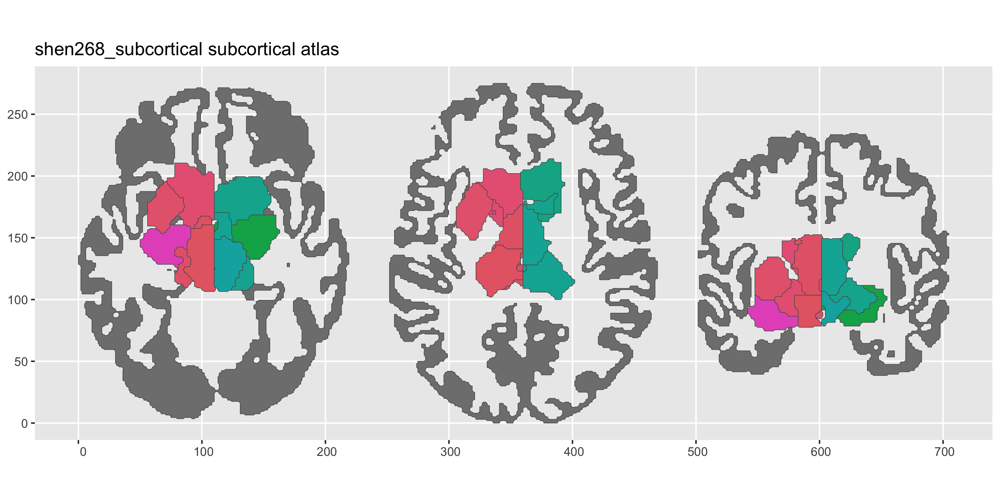

Shen 268 functional parcellation atlas for the ggseg ecosystem.
Shen X, Tokoglu F, Papademetris X, & Constable RT (2013). Groupwise whole-brain parcellation from resting-state fMRI data for network node identification. NeuroImage, 82, 403-415.
Installation
We recommend installing the ggseg-atlases through the ggseg r-universe:
options(repos = c(
ggseg = "https://ggseg.r-universe.dev",
CRAN = "https://cloud.r-project.org"
))
install.packages("ggsegShen")You can install this package from GitHub with:
# install.packages("pak")
pak::pak("ggsegverse/ggsegShen")Subcortical atlas

Shen 268 is a functional parcellation derived from resting-state fMRI connectivity, so the subcortical regions follow connectivity gradients rather than named anatomical structures (thalamus, caudate, etc.) and the left/right counts are not symmetric. Of the 268 parcels, 15 fall in subcortical territory by a centroid criterion. The greyscale anatomy behind the regions is FreeSurfer’s cvs_avg35_inMNI152 aparc+aseg, used as a visual backdrop only — Shen on its own provides only parcel IDs without anatomical context. See ?shen268_subcortical for details.